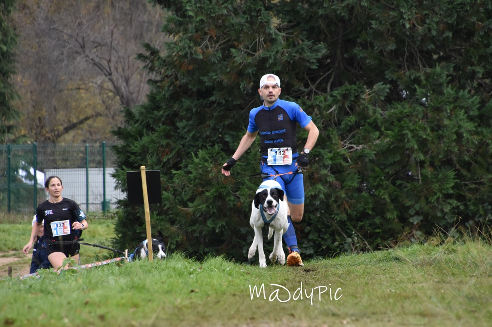
Jonathan Atton
Alsace — Moselle · Fondateur de CanicompetLe portrait
Profil
À suivre : l'interview IA
« Développeur, entrepreneur et sportif d'endurance : trois disciplines, une même exigence. »
En tant que développeur logiciel sénior, j'apporte une valeur ajoutée immédiate à votre entreprise. Mon expérience multisectorielle (banque, juridique, RGPD, ESN, laboratoire d'analyses, sport) me permet de comprendre rapidement vos enjeux métier et d'être force de proposition dès le premier jour. Mon expertise technique assure la création de solutions capables de répondre aux défis les plus complexes.
Au-delà du code, je m'appuie sur des compétences complémentaires en stratégie décisionnelle, marketing et encadrement d'équipes. Cette vision 360° me permet de proposer des solutions innovantes, cohérentes avec vos objectifs business.
- Discipline
- Développeur fullstack sénior
- Canicross · caniVTT · triathlon · Xterra
- Terrain de jeu
- Web, mobile, CRM Dynamics 365
- Sentiers, route et eau libre
- Endurance
- 15+ ans de projets livrés
- Championnats de France, d'Europe et du Monde
- Équipe
- TVH Consulting
- Cani'Compet Alsace (président)
- Créations
- Canicompet · CaniGPS · Son Espace Santé
- Canicross de Benfeld (organisateur)
- Point fort
- Force de proposition
- Résilience
L'interview d'après-course
IA & automatisation
À suivre : le classement général
QuestionL'IA, simple effet de mode ?
J. AttonNon. Elle transforme déjà la façon de concevoir des logiciels et de faire tourner une entreprise. Je m'appuie au quotidien sur les outils d'IA pour créer des applications, automatiser des processus et livrer plus vite, avec la rigueur d'un développeur sénior.
QuestionConcrètement, qu'est-ce que vous apportez ?
-
01
Applications intelligentes
Intégration de modèles de langage dans vos applications : assistants métier, analyse de documents, recherche et génération de contenu.
-
02
Automatisation de processus
Workflows et agents connectés à vos outils existants (Dynamics 365, API, bases de données) pour supprimer les tâches répétitives.
-
03
Cadrage & conformité
Identifier où l'IA crée une vraie valeur, choisir les bonnes solutions et les déployer dans le respect du RGPD et de la sécurité des données.
QuestionEt pour la suite ?
J. AttonÊtre prêt pour les besoins IA de demain, avec une expérience ancrée dans le concret : R&D en vision par ordinateur chez Eurofins dès 2018, et des fonctionnalités d'IA intégrées à Son Espace Santé.
Classement général · après l'étape 8
Parcours
À suivre : les partenaires techniques
-
É8
Sommet
10/2025 → en cours Position actuelle
Développeur sénior TVH Consulting
Intégrateur et développeur spécialisé sur Microsoft Dynamics 365. Conception et déploiement d'applications métiers avancées avec Canvas Apps et React pour des clients comme TotalEnergies ou Guinot.
-
É7
CLM
01/2025 → en cours
Son Espace Santé Side project
Application mobile de passeport numérique pour animaux de compagnie : suivi administratif, santé et bien-être, avec des fonctionnalités d'IA intégrées. Essayer la démo ↗
-
É6
Montagne
12/2016 → en cours
Fondateur Canicompet
Plateforme mobile permettant aux clubs sportifs de gérer les inscriptions et de chronométrer leurs compétitions (manuel ou automatique) en autonomie. +20 000 utilisateurs.
-
É5
Vallonnée
06/2020 → 02/2025
Fondateur CaniGPS
Solution de suivi GPS pour chiens : localisation en temps réel, clôtures virtuelles, alertes et suivi d'activité sportive.
-
É4
Montagne
04/2018 → 12/2022
Développeur sénior Eurofins
Leader mondial de l'analyse en laboratoire. D'abord dans l'équipe du logiciel de suivi des analyses, puis développeur principal d'un projet R&D phare : l'analyse automatique par microscope électronique (vision par ordinateur, IA).
-
É3
Vallonnée
01/2013 → 03/2018
Responsable informatique ActeCil
Société spécialisée dans les audits et logiciels RGPD. Mise en place de l'environnement informatique, création d'outils SaaS (APM, CilApps) et constitution d'une équipe. Appels d'offres avec des grands comptes (Thales, groupe La Poste).
-
É2
Plaine
01/2010 → 01/2013
Développeur Euro Information
Outils web, statistiques, CMS multi-sites et applications bancaires pour le Crédit Mutuel CIC.
-
É1
Prologue
2009
Master 2 Ingénierie du logiciel Nancy
Pendant mes études : contributeur au projet libre mondial Enlightenment (EFL) et participant au Google Summer of Code.
Partenaires techniques
Compétences
À suivre : les replays
Partenaires officielsmaîtrise avancée
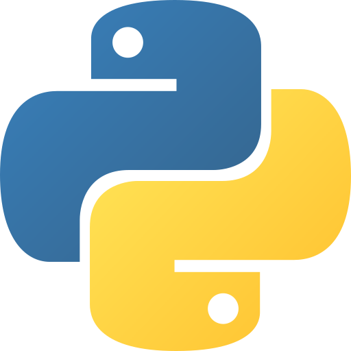
Python- Django
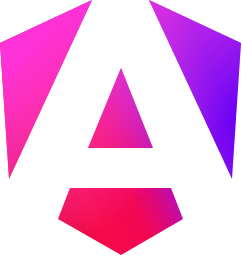
Angular- Ionic
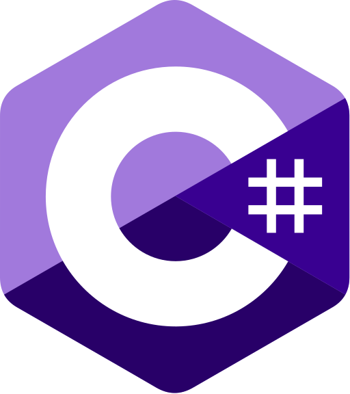
.NET / C#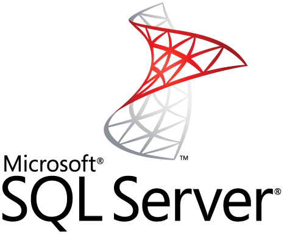
SQL Server · MySQL- Dynamics 365CRM
- Power AppsCanvas Apps
- IA & LLMAssistants · automatisation
- API RESTIntégrations
Fournisseurs officielsmaîtrise opérationnelle
- React
- Python / PyQt
- WebSocket
- WPF
- OVH
- DevOps
- OpenCV / Emgu
- Linux · macOS · Windows
Staff techniqueleadership & langues
- Autonomie & décision
- Encadrement d'équipe
- Agile / Scrum
- Appels d'offres grands comptes
- RGPD
- Français — natif
- Anglais — professionnel
Les replays
Projets
À suivre : le reportage sport
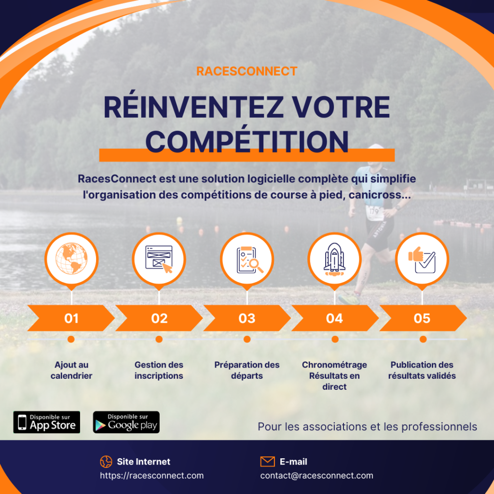
Replay Canicompet Inscriptions et chronométrage de compétitions, gérés par les clubs en autonomie. 20 000+ utilisateurs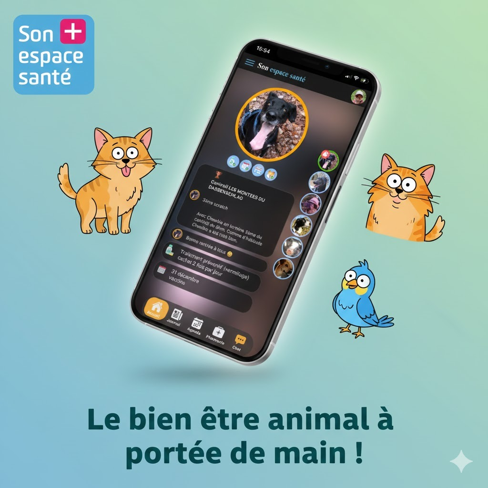
Démo Son Espace Santé Passeport numérique et suivi bien-être des animaux, avec des fonctionnalités d'IA.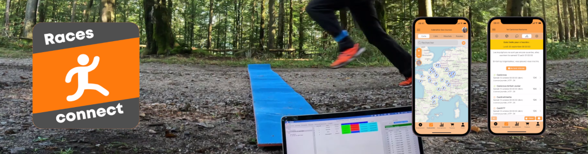
Replay RacesConnect Timing Listes de départ et chronométrage, manuel ou automatique avec puces.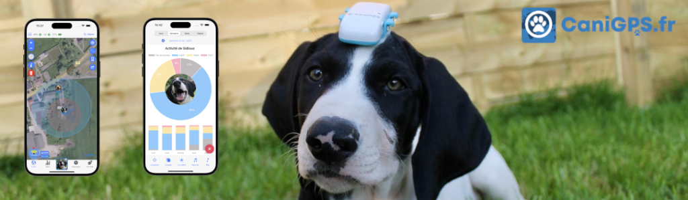
Replay CaniGPS Géolocalisation temps réel, clôtures virtuelles et suivi d'activité pour chiens.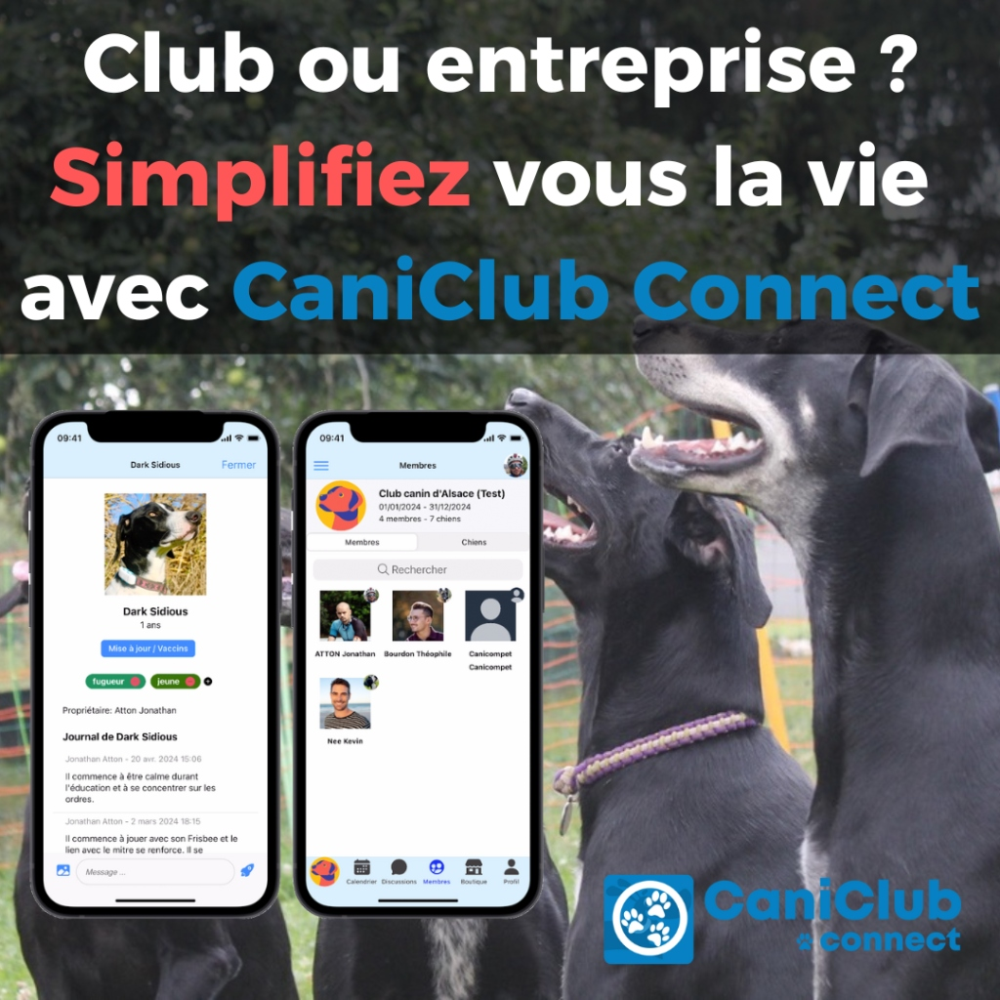
Archive CaniClub Connect Application pour clubs canins : membres, communication, calendrier et boutique.Le reportage
Sport
À suivre : prendre l'antenne
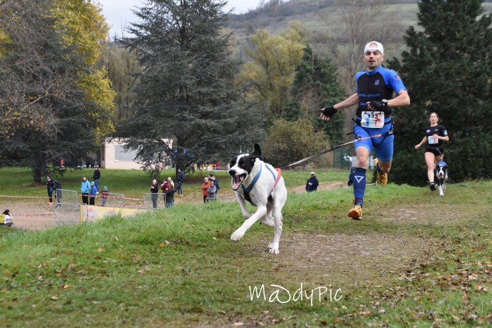
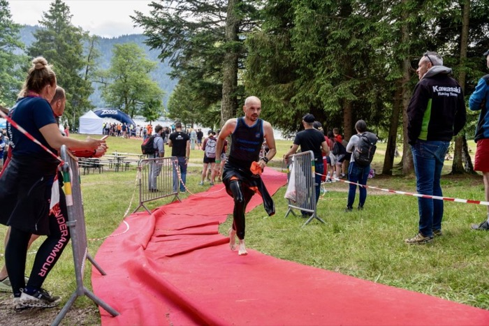
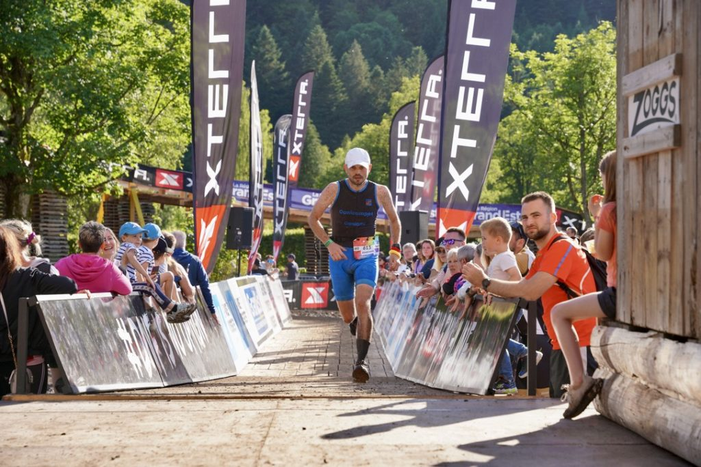
L'endurance, sur les sentiers comme en production.
Athlète passionné, je pratique le canicross, le caniVTT, le triathlon et le Xterra, et j'ai participé à plusieurs championnats de France, d'Europe et du Monde.
Le sport m'apporte résilience, régularité et le goût des objectifs ambitieux : les mêmes qualités que j'applique à chaque projet.
- ClubPrésident de Cani'Compet Alsace
- OrganisationCanicross de Benfeld ↗
- DisciplinesCanicross · caniVTT · triathlon · Xterra
Prenez l'antenne
Contact
Fin de l'émission
Un projet, une mission, une idée à automatiser ?
Collaboration, question technique ou opportunité : écrivez-moi, je serai ravi d'en discuter. Réponse sous 48 h.
- Emailjonathan.atton@gmail.com
- Téléphone+33 6 20 01 71 01
- SecteurAlsace — Moselle, France
- En ligneLinkedIn ↗GitHub ↗
Message reçu en régie !
Merci pour votre message. Je vous réponds dans les plus brefs délais.